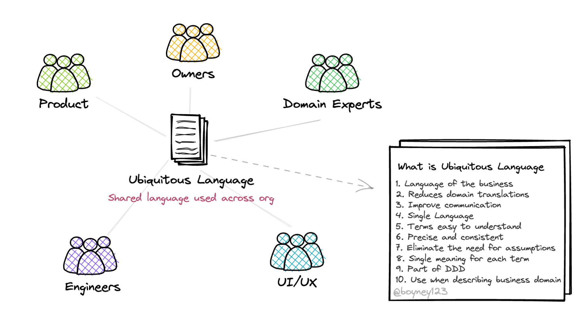
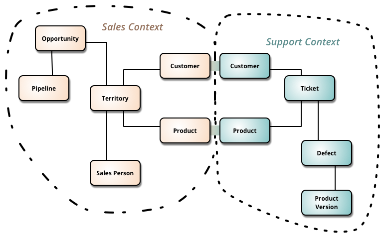
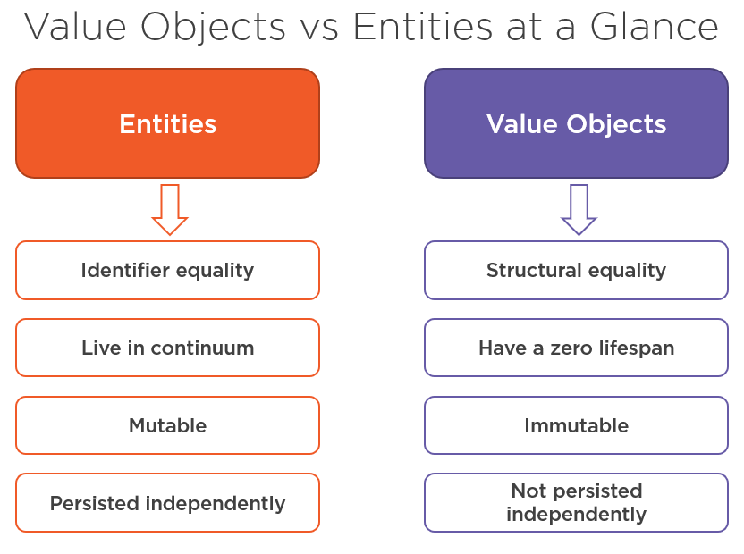
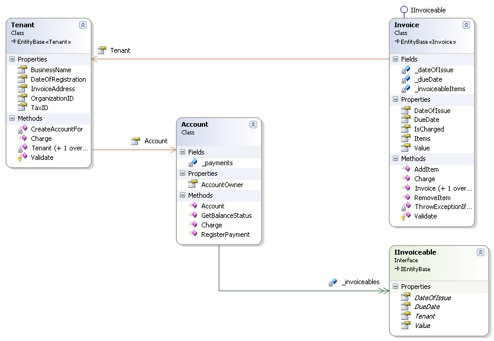

Domain-Driven Design (DDD) is an approach to software development that emphasizes the connection between the implementation and the business domain. It helps teams build models that solve real problems.
The Domain and the Ubiquitous Language

The domain is the core area of knowledge around which the software is built. The ubiquitous language is a shared language between developers and domain experts, ensuring everyone is on the same page.
Bounded Context

A bounded context is a boundary within which a particular domain model is defined and applicable. It helps to keep complexity manageable by isolating different aspects of the system.
Entities and Value Objects
Entities have a distinct identity that runs through time, while value objects are immutable and only defined by their attributes. Understanding the difference is crucial for modeling the domain effectively.


Aggregates and Repositories
An aggregate is a cluster of related entities and value objects treated as a single unit. A repository provides an abstraction for persisting and retrieving these aggregates.
Event Storming
Event storming is a workshop format that helps teams explore complex domains by modeling business events. It’s a powerful tool for aligning domain knowledge.
Example: E-Commerce Domain
Consider an e-commerce platform: The Order is an entity, while Shipping Address might be a value object. Bounded contexts might include Order Management and Customer Support.
Core Principles Recap
Focus on the domain and the ubiquitous language.
Define bounded contexts to manage complexity.
Identify entities, value objects, aggregates, and repositories.